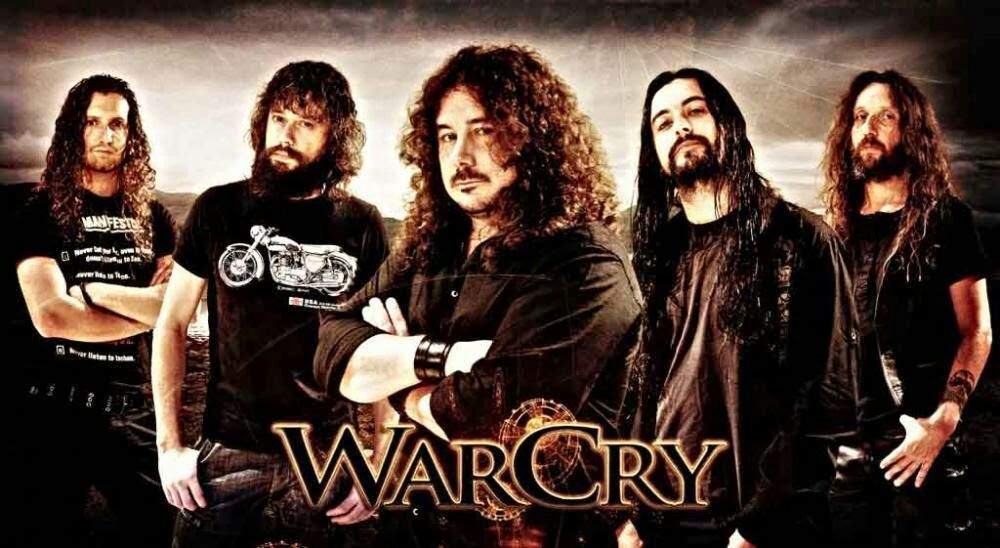
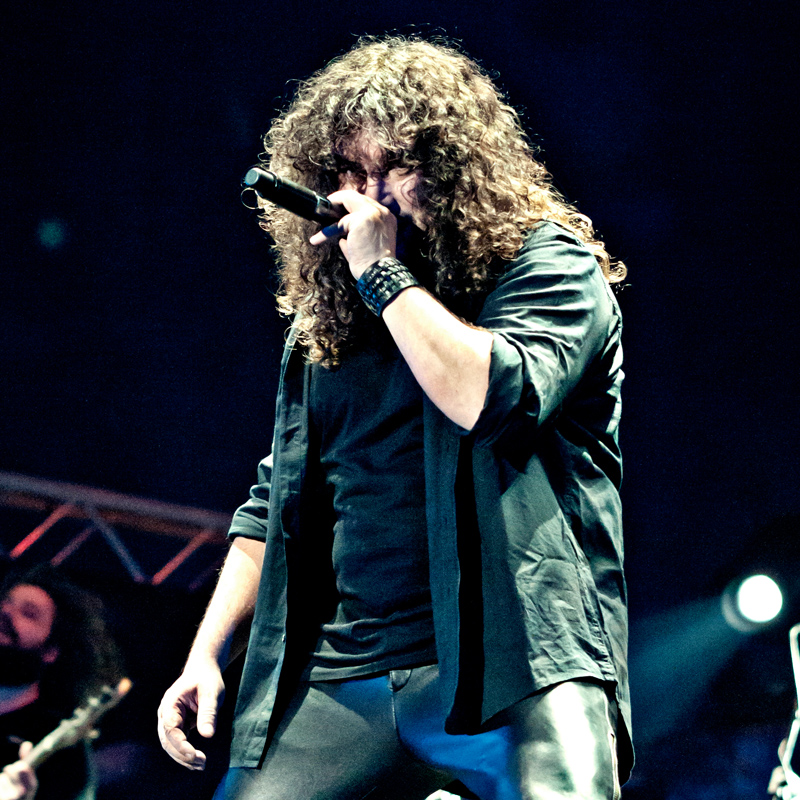
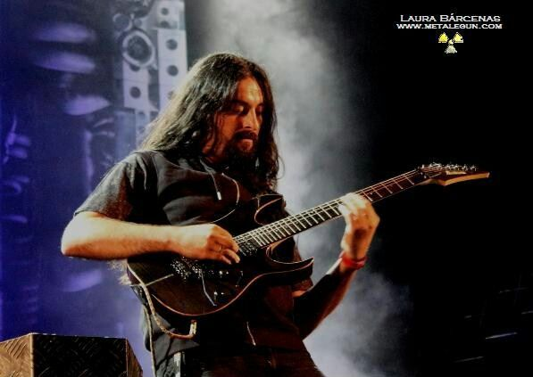
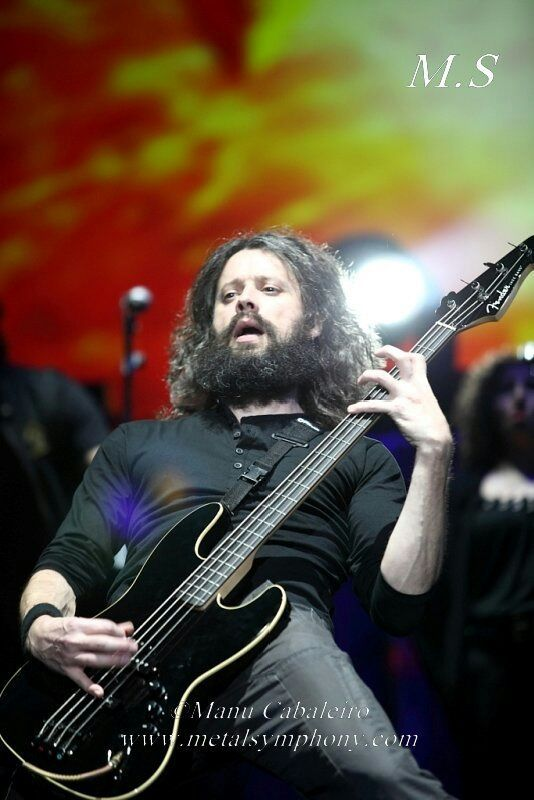
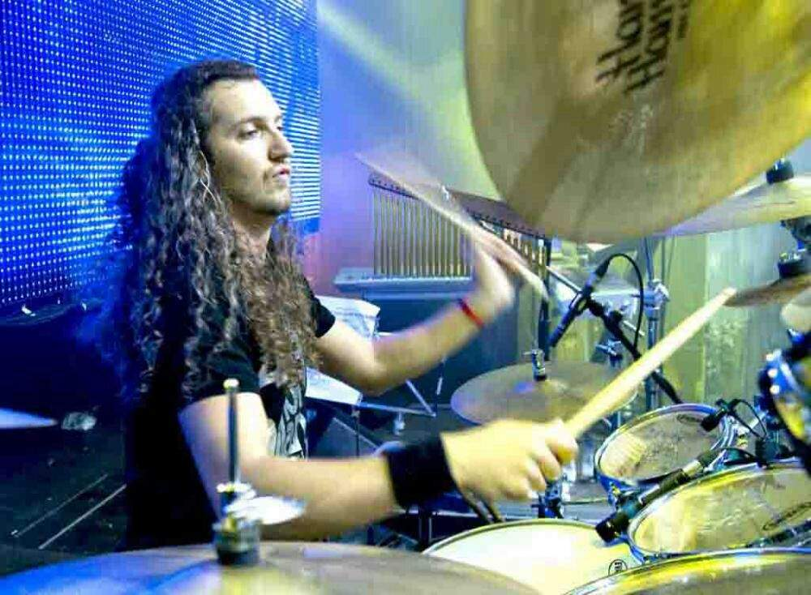

WarCry es una banda de heavy/power metal fundada en 2001 en Asturias, España, cuando el vocalista Víctor García y el baterista Alberto Ardines fueron expulsados de Avalanch.
Al principio, las letras de WarCry estaban centradas en una naturaleza épica y fantástica, con temas medievales y mitológicos y un estilo de heavy con baterías un poco más rápidas de lo común. Más recientemente, las letras han hecho referencia a experiencias sociales y personales. El estilo musical también cambió hacia tempos más rápidos y armonías de parejas de guitarras como metal heavy/progresivo.
Su primer álbum fue lanzado el 17 de abril de 2002. Recibió varias críticas positivas. La revista de rock japonesa Karma, lo llamó "¡Un álbum español que impulsa el verdadero metal!" y Kerrang! lo declaró un "buen disco debut de una muy buena banda".
El segundo álbum de WarCry, El Sello de los Tiempos, fue lanzado el 1 de diciembre de 2002 a través de Avispa Music. Las críticas sobre este disco fueron positivas. Kerrang! dijo que "la banda liderada por Alberto Ardines y Víctor García ha demostrado con este disco que la superación es posible". También Heavy Rock comentó que "la mayoría de los grupos necesitan varios años de singladura para alcanzar la solidez compositiva, WarCry lo han conseguido a lo largo del año". Los premios Radial y la revista Heavy Rock premiaron a WarCry "banda revelación del año". WarCry dio su primer concierto el 13 de diciembre de 2002 en Avilés, Asturias, como comienzo de su "Gira el Sello de los Tiempos", la cual duró todo un año. Durante esta gira WarCry compartió escenario con muchas bandas conocidas a nivel mundial como Moonspell, Sepultura, Saratoga, Barón Rojo y Rage, entre otras.
En un principio, el tercer disco iba a ser cantado en inglés, pero abandonaron la idea después de las buenas críticas recibidas en el centro de Europa por El Sello de los Tiempos cantado en castellano. En agosto de 2003 comenzaron a grabar el álbum, producido por Víctor y Ardines, con la colaboración de Slaven Kolak. Alea Jacta Est fue mezclado y editado en el estudio de la banda Jaus Records y lanzado el 1 de enero de 2004 a través de Avispa.
Alea Jacta Est fue un disco con tintes ligeramente más progresivos que los anteriores, el cual fue bien recibido por las críticas.
¿Donde está la luz? fue lanzado el 1 de febrero de 2005 a través de Avispa, debutando en el puesto n.º 16 en España. En este disco la banda abandonó el uso del doble bombo y empleó una temática letrística más social. Este trabajo fue bien recibido por la crítica.
En medio de la correspondiente gira, WarCry había comenzado a trabajar en su quinto álbum, La Quinta Esencia, que fue lanzado el 18 de septiembre de 2006, el mismo día que la banda recibió una certificación de oro por las ventas de Directo a la Luz. La Quinta Esencia entró al n.º 19 en las listas de España y el mes siguiente la banda se embarcó en una gira en soporte del álbum
Revolución fue el sexto disco de estudio de la banda, lanzado el 27 de octubre de 2008. Ya en este año empiezan la gira con una serie de conciertos por toda la geografía española.
El día 15 de abril de 2011 se edita su disco "Alfa", editado por Jaus Records.


Nombre completo - Víctor García Gonzáles
Edad - 47 años
Prodigioso músico nacido en Oviedo, Asturias - España, se le conoce por ser el fundador de ésta gran banda y por
haber pertenecido a Avalanch otra de las grandes exponentes del género. Sus influencias fueron bandas como •Europe• y •Bon Jovi•.
Se puede decir sin lugar a dudas que es un vocalista dotado de una gran técnica, y que es un excelente compositor,
tiene a cuestas una carrera envidiable y es que logró formar una de las bandas con mayor trascendencia en lo que
concierne a Heavy Metal y Power Metal en español, su éxito habla por si sólo.

Nombre - Pablo García
Edad - 41 Años
Al igual que Víctor, Pablo también nació en Asturias - España, y aunque esto y su apellido apunten a que estos
dos grandes músicos son hermanos, no es así. Empezó tocando en bandas de covers como la mayoría de músicos, sus
favoritas siempre fueron •Dream Theater• y •Symphony X•, además él siempre admiró a guitarristas de la talla de;
"John Petrucci" y "Steve Vai", se separó un tiempo de Warcry para formar parte de •Presto• banda de la cual no hay
mucha información. Al cabo de un tiempo vuelve a ser parte de las filas de Warcry siendo la alineación que actualmente
conocemos.

Nombre - Roberto García
Edad - 49 Años
Más coincidencias en cuanto al apellido y lugar de origen ya que Roberto también nació en Asturias - España. Al principio
era un apasionado de la guitarra española, con la cual disfrutaba tocar música de artistas clásicos. Así mismo también disfrutaba
de bandas como •Metallica•, •Accept• y •Judas Priest• siendo estas sus influencias.
Roberto formó parte de Avalanch al igual que Víctor, pero por problemas personales abandonó la banda. Unos años después es invitado
a ser parte de Warcry donde aun permanece como bajista.

Nombre - Rafael Yugueros
Edad - 54 Años
También proveniente de Asturias como los anteriores miembros, se vio inspirado a tocar la batería al ver el vídeo de "The Final Countdown"
de la banda •Europe•, tocó con algunos grupos por mucho muy desconocidos, hasta llegar a Warcry, pero luego de la disolución temporánea de
ésta, pasa a formar parte de otros grupos como •Darna• y •Darksun•. Con la reagrupación de Warcry abandonó estos anteriores grupos.